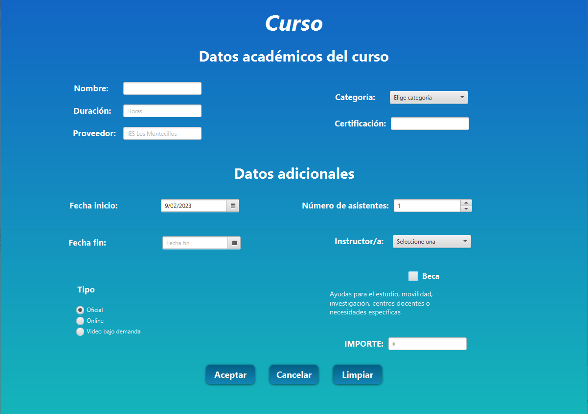
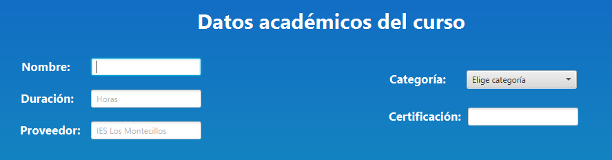
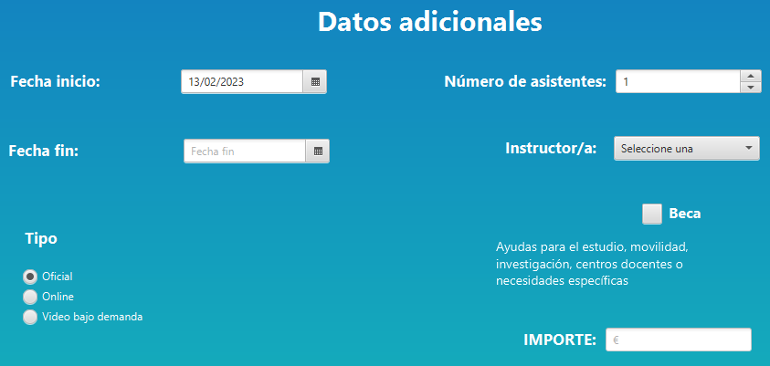
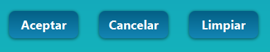

AYUDA CURSO

En la imagen anterior se ve la escena para rellenar con los datos de un nuevo curso.
En la zona superior aparece una etiqueta con el texto "Datos académicos del curso" y un conjunto de cuadros de textos con sus etiquetas asociadas.
Entre ellas la de categorías cuyos valores posibles podrían ser las mostradas en la imagen.

- Nombre: debemos introducir el nombre del curso.
- Duración: debemos introducir la duración del curso, dicho dato debe estar expresado en horas.
- Proveedor: debemos introducir el proveedor del curso.
- Categoría: debemos seleccionar una categoría de entre las posibles.
- Certificación: debemos introducir el tipo de certificación que obtendremos con el curso.

- Fecha de inicio: seleccionaremos la fecha de inicio del curso. Esta por defecto será la del día actual. No podrá seleccionar una fecha de inicio anterior a la del día actual.
- Fecha de fin: seleccionaremos la fecha de fin del curso. No podrá seleccionar una fecha de fin anterior a la fecha de inicio.
- Número de asistentes: indicaremos el número de asistentes del curso. Debemos modificar este dato mediante el Spinner.
- Instructor/a: debemos seleccionar un instructor de entre los posibles.
- Tipo: nos permite seleccionar el tipo de curso, pudiendo elegir ente Oficial, Online, y Video bajo demanda
- Beca: indica si dicho curso está acogido a algún tipo de ayuda.
- Importe: debemos introducir el coste del curso. A la cantidad numérica introducida se le añade el formato moneda (€) automáticamente.
En la parte inferior de la App encontraremos los siguientes botones:

- Aceptar: informará al usuario si está seguro que desea realizar la operación. En caso de aceptar y tener todos los datos introducidos correctamente,
introducirá los datos en la base de datos y nos mostrará una alerta de confirmación, seguidamente, se limpiarán los campos para poder introducir un nuevo curso.
En caso de cancelar volverá a la vista de modificación de datos.
Si al pulsar el botón aceptar tenemos campos vacíos o con errores nos mostrará una alerta con los errores que debemos corregir, además se marcarán dichos campos con errores de color rojo.
- Cancelar: devuelve a la pantalla principal sin realizar ninguna acción.
- Limpiar: vaciará los datos que hayan introducidos en los campos hasta el momento.